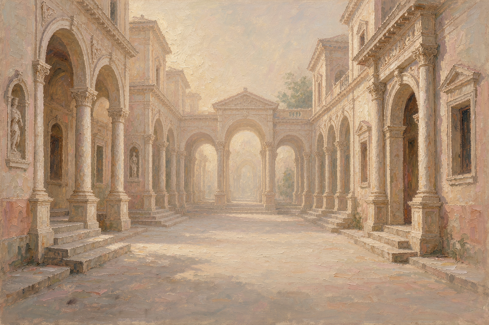
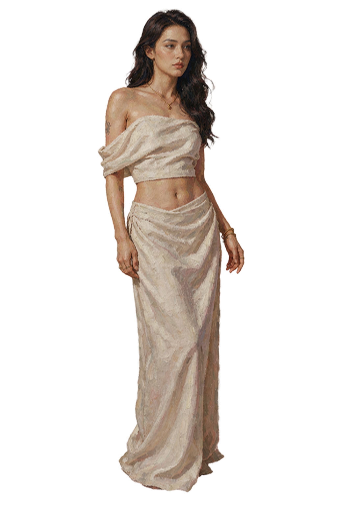
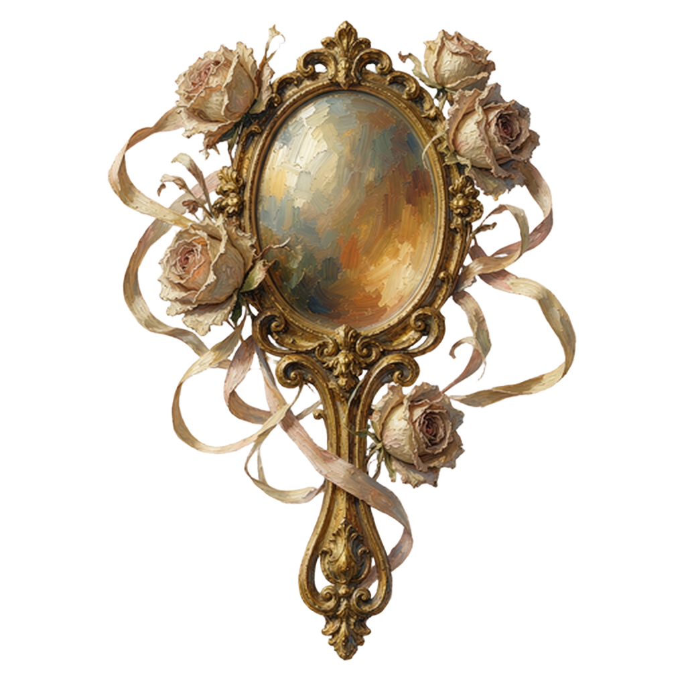

作品图 · 16:9
潮汐档案
书籍设计 · 2025 · 上海



现可接新项目 · 书籍 / 展览 / 品牌
做纸上的东西，也做屏幕上的。偏爱纸的厚度、油墨的边缘，和那些需要凑近才看得见的细节。
书籍设计 · 2025 · 上海
展览视觉 · 2025 · 北京
九年平面，三年博物馆与独立出版。做的东西大多很慢，所以挑客户也慢。
做了九年平面，最近三年主要和博物馆、独立出版社打交道。
习惯先把材料摸一遍再动笔。纸的克重、布的织法、油墨在哑光面上干掉之后偏暖还是偏冷，这些比版式更早决定一张东西的样子。
也做数字的。但会把它当作纸的延伸——同样的字距，同样的留白，只是换了一种反光。
邮件最快，通常两天内回。说清截止时间和预算范围，我们能省掉一轮来回。
hello@example.com